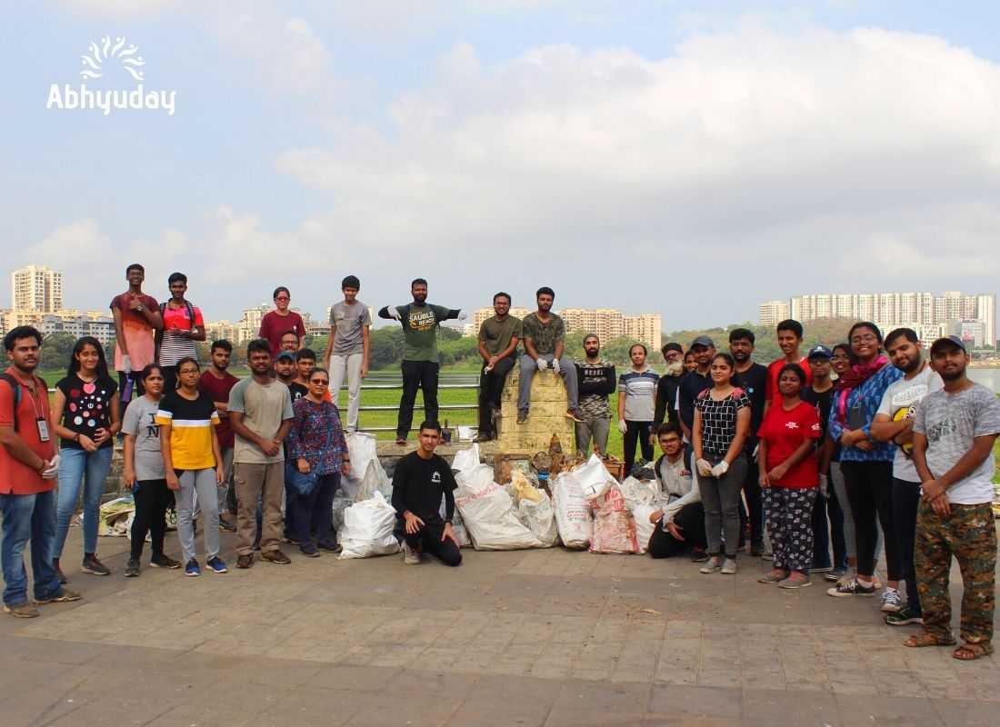
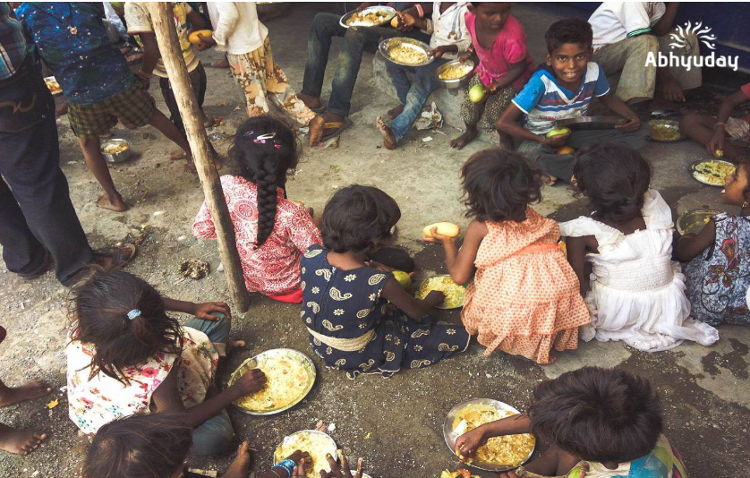

Campaigns is the face of Abhyuday, IIT Bombay. Abhyuday started Campaigns back in 2014 and the main aim of the Department is to increase awareness and inspire action for social causes. It was initiated with Volunteer visits in order to provide opportunities to the students of the Institute who wish to work for a better society. The major part of campaigns comprises beach cleanups, food distribution campaigns, menstrual health awareness campaigns for girls, self defense workshops, climate change related activities, etc. Volunteer Activities majorly include visits to various NGOs, Orphanages, Old Age Homes, Slums and other unexplored and unserved sections of the society. Campaigns are yearlong events which involve exuberant youth participation and witness heart wrenching moments of self-discovery creating a deep and direct impact on the society as well as the social conscience of young adults. Abhyuday conducts activities which relishes a quest among the people to help the ones in need and creates a direct impact on the society. Campaigns were then expanded towards the concern of lack of career guidance among the school going children and hence introduced a Career Counselling Campaign(CCC) to guide and direct a correct career path to them. Apart from this, Masti Ki Paathshala(MKP) was also initiated with the motive to inculcate interest among the children in maths and science subjects through some fun games and activities. Abhyuday is a community of 80+ students backed by 100+ faculty members and 10,000 students of IIT Bombay.

Volunteer weekends aim to enlighten the youth by making them conscious of the social issues and encouraging them to initiate social change. Abhyuday connects and takes help of youth for conducting various social activities. Under this initiative, they conduct visits to various NGOs, Old Age Homes, Slums, Orphanages and Schools, interact with people and deliver our services. They are associated with 50+ NGOs including Yuva Parivartan, Gandhi Fellowship, CRY and TFI.


“It’s not the years in your life that counts but the life in your years.” What actually matters in life is making memories and living each day to the fullest. As the name suggests, volunteers visit Old Age Homes and spend some quality time with these abandoned world changers. The purpose of this campaign is to increase the sensitivity in volunteers who themselves are students for their parents and elderly people.

The best feeling of happiness is when you have made someone else happy!! The Robin Hood Army is a volunteer based organization that works to get surplus food from restaurants across to the less fortunate people. Abhyuday helps connect young volunteers towards the problem of hunger in our society.

Abhyuday IIT Bombay in collaboration with Nisarg Swasthya Sansthan conducted the Powai Lake Mega CleanUp Campaign.The campaign was aimed at cleaning Powai lake banks to promote a cleaner, greener, and healthier environment. The Campaign had active participation with 400+ Volunteers showing up from IIT Bombay and Powai and collected around 1.5 tonnes of solid waste including plastics and other materials that pollute the lake along a stretch of 1.5 Kilometres along the banks of the lake.

Abhyuday IIT Bombay with a group of some Volunteers visits Versova Beach on the second weekend of every month for the 'World's Largest Beach Cleanup Campaign’ i.e. Versova Beach Cleanup Campaign. They have been associated with Versova Beach Cleanup Campaign since more than one and half year under the leadership of UN Environment Champion of the Earth’16, Afroz Shah.

The “Masti ki Paathshala” initiative aims to teach basic science to children through a more innovative and fascinating way with the help of fun experiments and toys making sessions. Masti Ki Paathshala is an awe-inspiring classroom cum game room where each inquisitive little mind is free to create a world of its own, a world where magic of science happens, where learning is all about Fun and Masti.

“Learning is not attained by chance, it must be sought for with ardor and diligence." The Career Counselling Campaign provides free career guidance to underprivileged students. The objective of this campaign is to bring awareness about career and the importance of guidance among school students. They reach out to students through sessions conducted in various schools of Mumbai and through their app called the Career Counselling Helpline.
We also launched a Career Counselling Helpline App and toll free Helpline Number.You can feel free to call and get career counselling at home. Toll Free No. 1800-200-2090.
CRPF personnel Lalit Mohan spent around 14 days in isolation at the Isolation Centre designated to him in Delhi. It came to his realization that he might have contracted the virus when he developed a mild fever. Throughout the illness, he had mild symptoms related to the virus. He said,“Rather than the virus killing you, many patients first fall prey to the constant and at times, fake news revolving around the virus.” Also, he kept ruminating over the fact that his 72-year old mother and 12-year-old son were also tested positive, and this impacted his mental health significantly, and he was under constant stress throughout isolation. “Stay calm, stay positive, and work extensively on your mental health” was the main advice he would like to give to the rest of the world. “Mental health and willingness are as important while fighting the virus as your physique”, said the officer. A notable fact was that all the people, whom he contacted in the 14 to 28 days before his diagnosis, tested negative. His wife and second son tested negative to the virus. However, they had to face a societal problem. The neighbours would start treating them weirdly and started advising everybody not to help them concerning their grocery supplies or other essentials. He expressed his concern for the judgemental and fault finding society and voiced that people should be empathetic, compassionate, and stop such apparent ostracization of the patients and their families. All of us would have listened to this message on our phone many times “We have to fight the disease, not its patients.” Yet, it is shameful and sorrowful on our part, as asociety to not pay heed and apply it to our lives. Thankfully, all of the three have been completely recovered from the disease and are busy back to their daily routine.
A doctor who previously working as a junior resident in the department of neurosurgery, BMHRC, Bhopal. I resigned in the first week of June 2020 to pursue post-graduation in Orthopedic Surgery in SAIMS, Indore.
This Covid-19 pandemic was unexpected, unprecedented and deadly in terms of manyaspects, be it health, economy or our social fabric for that matter. Our Prime Minister came on television to announce that people have to come out to their balconies and clap hands to show support for all the healthcare workers involved in fighting Covid-19, but a few days ago, when a neurologist in Chennai was denied a dignified funeral due to the stigma attached to the disease, I realised something within our social structure had changed,for the worse.
The common man tried to educate people about the know-how of the disease, how it spreads, how it can be countered using masks and sanitisers but personally I feel, the message got diluted like a Chinese whisper. A few of my friends who lived off-campus were denied entry into their apartment buildings. It felt like the era of untouchability was back. My colleagues have experienced their homes being barricaded or cordoned off due to fear that they might spread the infection. People need to stop believing whatever they see on news channels or read on WhatsApp and need to develop a scientific temperament. COVID-19 is a respiratory infection, anyone can catch it, there is no need to be afraid of the patient who had it.
Imagine people shooing you away socially, sharing your home photographs on social media, stopping groceries, milk and vegetable delivery to your house just because you have a cold. The social stigma attached to this will have to be combatted like the way the whole worldcame together to fight HIV. My only advice will be that we as healthcare professionals are the frontline soldiers in this war with this virus. If we get scared by obnoxious things created by our own people we protect we would have failed them. Remember a very apt slogan coined recently which says “fight the disease, not the patient"
support@abhyudayiitb.org +91 7391969073/ +91 9929332274
Abhyuday Office Student Activity Centre ( SAC ) IIT Bombay Zip Code - 400076
_animated.svg)